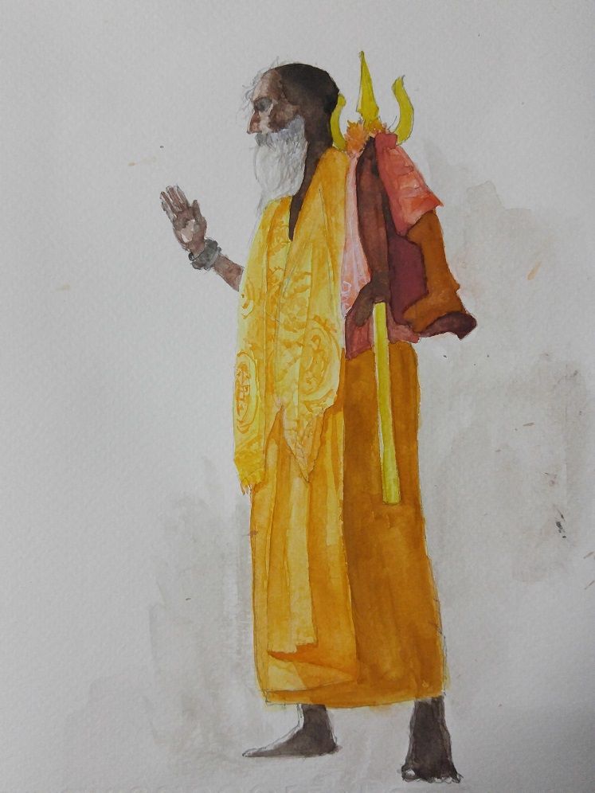

2015/08/19

ความผิดพลาดในวันนี้: ประเมินภาพที่จะวาดต่ำเกินไป, เร่งและพยายามจะขับสีในแบบที่ไม่ถนัด, ต้องฝึกทักษะการผสมสีไม่ใช่แก้สีด้วยการระบายทับบ่อยๆ, ยังไม่รู้จักสีและกระดาษมากพอ, ใจไม่นิ่งเลย
สิ่งที่ควรจะลอง: พยายามนึกภาพในหัวให้ง่ายลง ตัดทอนรายละเอียดที่เกินจำเป็น ให้ดูสะอาดกว่านี้
สำนึกผิด: ห่วงเธอมากเกินไปอีกแล้ว, กินไอศกรีมก็มากเกินไปตั้ง 2 แท่ง, หลับในเวลางานก็เยอะไปหน่อย
ปล. ขอให้มีความสุขนะ